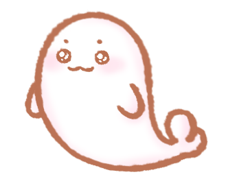

SEAL
豹豹
这次故事的主角，也是由你扮演的海豹厨师。为了救回鲨鱼，开始研究料理、经营食堂。
SEAL SHARK DIARY
一间小食堂，一座小岛，一段关于友情的故事。

ABOUT THE GAME
《豹豹鲨鱼日记》是一款手绘风格的模拟经营游戏。你将化身可爱的海豹厨师，在豹豹岛上研究料理、种植食材、经营食堂，认识岛上各有性格的小伙伴。
在这里，食物与友情相连。用准备好的料理招待居民，积累友情值，让小食堂慢慢成长，也让岛上的故事继续向前。
THE STORY
豹豹、鲨鱼和朋友们原本在岛上过着快乐的日子，直到一位不速之客——虎鲸——突然到来。它破坏了岛上的设施，也给伙伴们带来了不少麻烦。
鲨鱼正想着怎样赶走虎鲸，却先被虎鲸带走了。为了救回鲨鱼，豹豹只好答应对方的要求：做出最美味的食物给它品尝。
豹豹能找回鲨鱼吗？又该怎样面对这位不请自来的客人？一段看似惊险、又带着温暖的岛上故事，就这样开始了。

MEET THE ISLANDERS

SEAL
这次故事的主角，也是由你扮演的海豹厨师。为了救回鲨鱼，开始研究料理、经营食堂。

SHARK
与豹豹一起生活在岛上的伙伴。被虎鲸带走后，成为豹豹这场料理冒险想要找回的重要朋友。

ORCA
打破小岛平静的不速之客。它带走了鲨鱼，并向豹豹提出了品尝最美味料理的要求。
LIFE ON SEAL ISLAND

组合食材，制作不同的料理。食材和料理携带的特性可以合成，也会影响品质、鲜度和友情值等属性。
招待岛上居民，用食物交换友情值。安排菜单、留意人气，让小食堂逐渐成长。
在逐步解锁的花园里种植原料。种子的特性与收获相连，为下一道料理准备新的可能。
在小岛的钓鱼玩法中，通过 QTE 挑战试着钓起更大的鱼。
A LOOK INSIDE
下一段故事，等你来到岛上。
Wishlist on Steam加入愿望单阅读开发日志 ↗